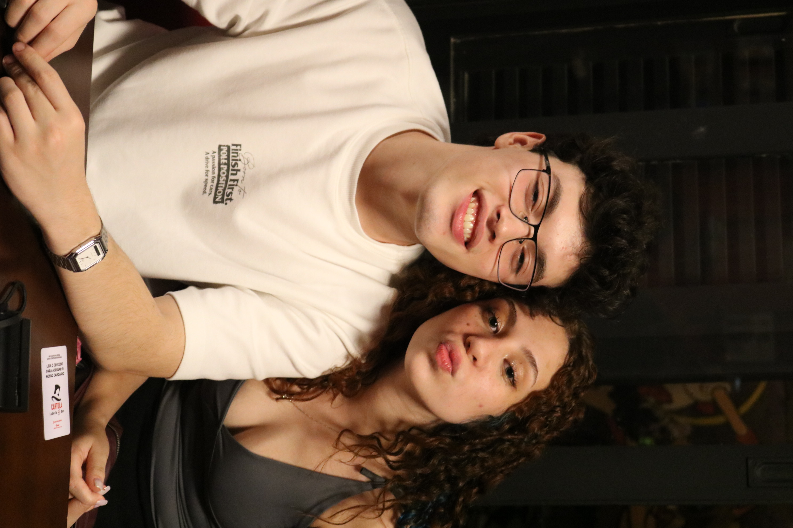

A fotografia celebra.
Em um mundo cheio de movimento, fotografar é transformar instantes em memórias vibrantes.

Nossos dias correm entre mensagens, trajetos e encontros inesperados. É um fluxo veloz - e fascinante. No meio dessa corrente existem fagulhas de beleza: um olhar, uma risada, uma luz atravessando a janela. As melhores partes merecem ser guardadas.
Dois jeitos de contar o tempo: deixá-lo escorrer em luz ou
congelá-lo numa fração de segundo

Uma finta infinita de momentos que não pediram licença para acontecer.